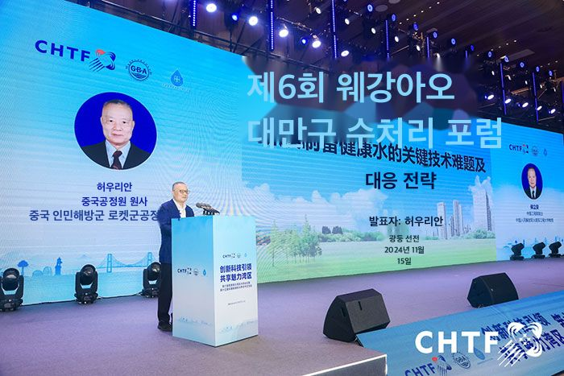
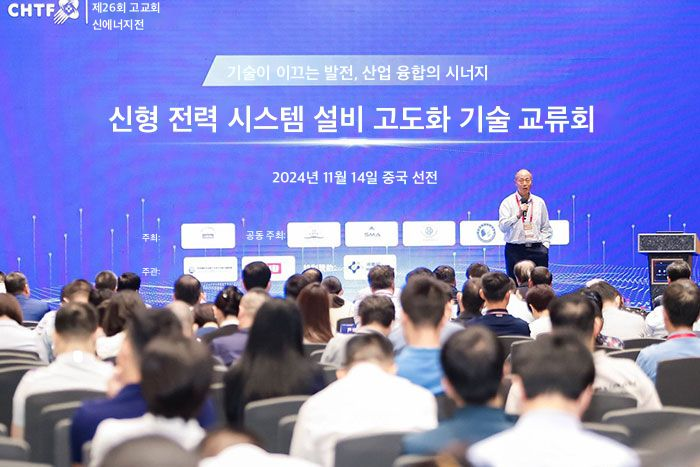
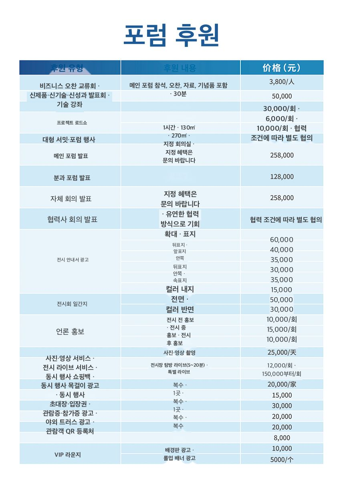

전문 기술 강좌
제28회 고교회 전문 기술 강좌
고교회는 현재 중국 최대 규모이자 가장 영향력 있는 과학기술 전시회로, 국제적 인지도를 갖춘 브랜드 전시회입니다. 과학기술·산업·금융의 통합에 중요한 역할을 합니다. 제28회 고교회는 전시면적 약 40만㎡에 100여 개 국가·지역의 유명 기업과 국제기구 5,000여 곳이 참가하고, 관람객은 50만 명에 이를 것으로 예상됩니다.
고교회는 프로젝트 매칭 상담회, 로드쇼, 성과 설명회, 기술 포럼 등을 통해 과학기술 기업의 어려움을 푸는 데 도움을 줍니다. 창업자에게는 전시·공유·교류의 장을, 참가자 모두에게는 다양한 정보와 사업 기회를 제공합니다.
제28회 고교회에서는 고위급 포럼 100여 회와 도시 로드쇼 60여 회가 열립니다. 제2회 신에너지 장인 혁신기술 교류회, 원사 포럼, 개막식, 메인 포럼, 기술 강좌, 프로젝트 협약식, 신제품·신기술 발표회, 프로젝트 투자 설명회, 기업 살롱 등이 포함됩니다.

제28회 고교회 전문 기술 강좌
기술은 세계를 바꾸고 혁신은 시대를 정의합니다
핫이슈 집중, 혁신 확산, 업계 선도, 과학기술 역량 강화

이번 고교회는 국가 발전전략과 관련 정책, 중점 산업과 전문기술 분야를 중심으로 다양한 전문 기술 회의를 엽니다. 각 전시구역의 주최·주관 기관, 업종 협회, 산업연맹이 전시 내용과 연계해 진행합니다.
장소: 지정 회의실
이용 시간: 1시간
선택 시간대: 오전 10:00~12:00, 오후 13:30~16:30
요금: 회당 30,000위안
협력 매체

포럼 후원

연락처
제28회 고교회 조직위원회 회의·행사팀
담당자: 왕 선생님
휴대전화: 186 0051 1517
이메일: wangyifei@zhenweiexpo.com
담당자: 옌 선생님
휴대전화: 181 4852 9480
이메일: 3239950742@qq.com